This page showcases my Blender animation projects, highlighting the core workflow and techniques I use to create compelling 3D animations.
Project Overview
In this project, I created a model and animated Solar System using Blender. The animation features the planets orbiting around the sun, demonstrating my skills in 3D modeling, rigging, and animation techniques.
Final Animation:
Tools & Software Used
Blender 3D
Step-by-Step Procedure
Manual Procedure
Add a sphere (planet): in Blender press Shift + A → Mesh → UV Sphere, then press S to scale.
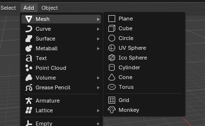
Smooth the sphere: select it, right-click → Shade Smooth.
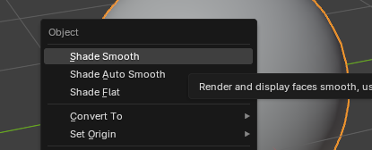
Add a material: open Material Properties, click New (Principled BSDF).
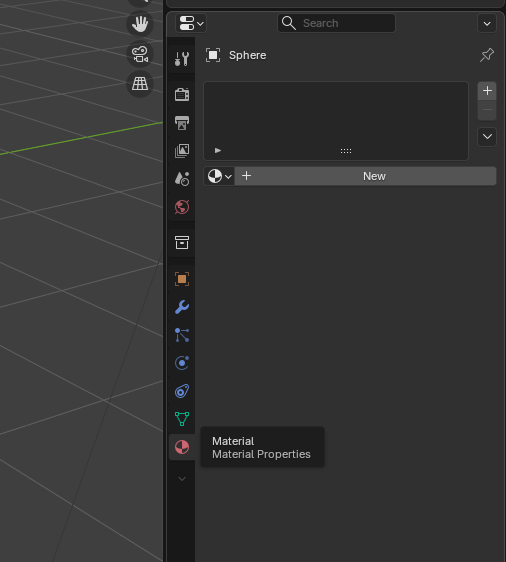
Apply a texture: in Base Color choose Image Texture and load your planet map.
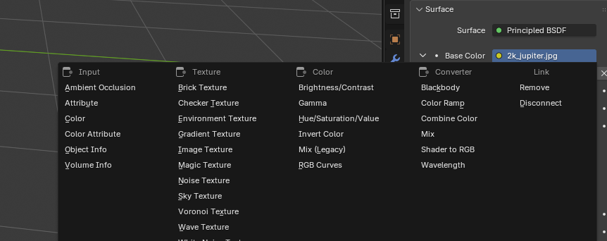
Preview the material: press Z → Material Preview or use the viewport shading icon.
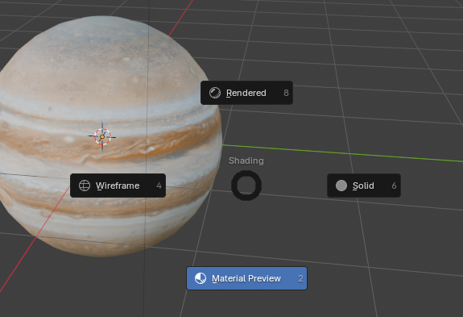
Animate rotation: at frame 1 insert a rotation keyframe (K → Rotation); at frame 250 (or 365) rotate Z by 360° and insert another keyframe.
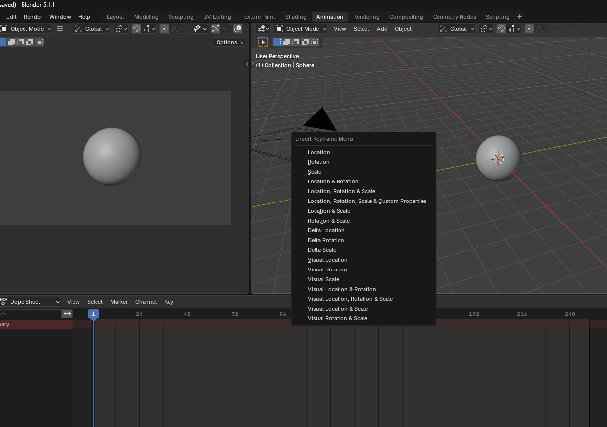
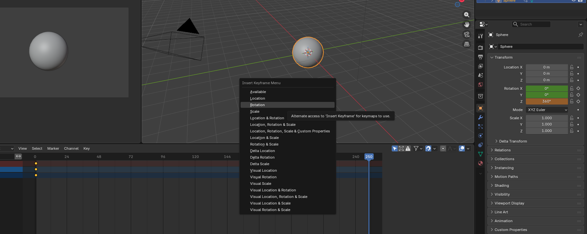
Add a space background (optional): World Properties → Environment Texture → load a space image.
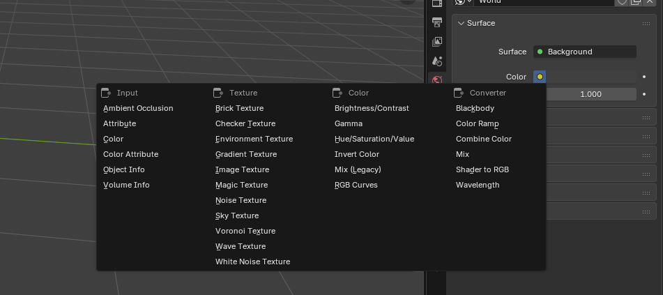
Python Scripting Procedure
Open a new script in Blender's Text Editor and write a Python script to create the planet, apply texture, and animate rotation (see provided scripts below).
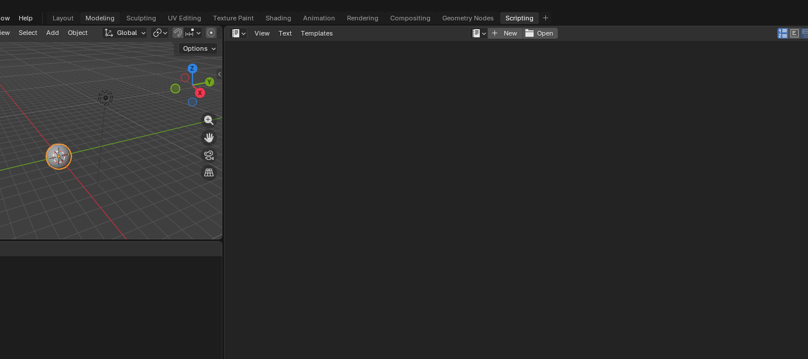
Run the script to automatically generate the planet with the specified properties and animation.
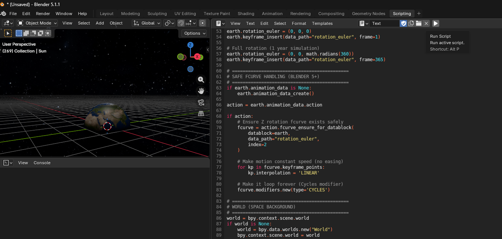
Output and Rendering Procedure
To output, go on Output on the Properties tab and change file format to Video, and on Encoding section change Matroshka to MPEG-4
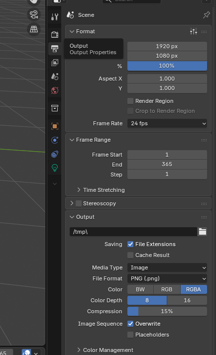
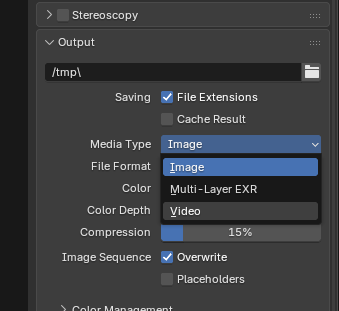
Render the animation: go to Render → Render Animation (or press Ctrl + F12) to export your video.
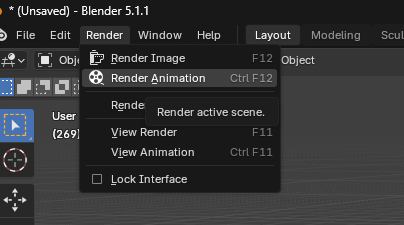
Planet Age Calculator
Enter your age in Earth years and see how old you would be on other planets.
Your results will appear here after you calculate.
Each Celestial Body Description
Sun
A massive star at the center of the solar system that provides light and energy to all planets. Revolution: Orbits the center of the Milky Way galaxy Orbit period: ~225–250 million years (galactic year) Distance: ~26,000 light-years from the center of the Milky Way
Mercury
Mercury is the smallest and closest planet to the Sun. It has a rocky, heavily cratered surface and almost no atmosphere, causing extreme temperature changes. Revolution (Rotation): ~58.6 Earth days Orbit Period (Year): ~88 Earth days Distance from Sun: ~57.9 million km
Venus
Venus is similar in size to Earth but has a thick toxic atmosphere made mostly of carbon dioxide. It is the hottest planet due to a strong greenhouse effect. Revolution (Rotation): ~243 Earth days (retrograde, rotates backward) Orbit Period (Year): ~225 Earth days Distance from Sun: ~108.2 million km
Earth
The third planet from the Sun and the only known planet that supports life, with liquid water and an atmosphere. Revolution: Orbits the Sun Orbit period: ~365.25 days (1 year) Distance: ~149.6 million km from the Sun (1 AU)
Moon
Earth’s only natural satellite, responsible for tides and stabilizing Earth’s tilt. Revolution: Orbits the Earth Orbit period: ~27.3 days (sidereal period) / ~29.5 days (phase cycle) Distance: ~384,400 km from Earth
Mars
Mars is known as the “Red Planet” due to iron oxide on its surface. It has the largest volcano in the solar system and signs of ancient water flow. Revolution (Rotation): ~24.6 hours (similar to Earth) Orbit Period (Year): ~687 Earth days Distance from Sun: ~227.9 million km
Jupiter
Jupiter is the largest planet in the Solar System and a gas giant composed mainly of hydrogen and helium. It has a strong magnetic field and dozens of moons, including the four large Galilean moons. Revolution (Rotation): ~9.9 hours (fastest rotation among all planets) Orbit Period (Year): ~11.86 Earth years (~4,333 Earth days) Distance from Sun: ~778.5 million km (5.2 AU)
Saturn
Saturn is the second-largest planet in the Solar System and is famous for its spectacular ring system made of ice, rock, and dust. It is a gas giant composed mainly of hydrogen and helium and has numerous moons, including Titan. Revolution (Rotation): ~10.7 hours Orbit Period (Year): ~29.5 Earth years (~10,759 Earth days) Distance from Sun: ~1.43 billion km (9.5 AU)
Uranus
Uranus is an ice giant planet that is the seventh planet from the Sun. It has a unique sideways rotation and a faint ring system. Revolution (Rotation): ~17.2 hours Orbit Period (Year): ~84.0 Earth years (~30,687 Earth days) Distance from Sun: ~2.87 billion km (19.2 AU)
Neptune
Neptune is the eighth and farthest-known Solar planet from the Sun. It is the fourth-largest planet by diameter and the third-most-massive. It has a deep blue color due to the presence of methane in its atmosphere. Revolution (Rotation): ~16.1 hours Orbit Period (Year): ~164.8 Earth years (~60,190 Earth days) Distance from Sun: ~4.5 billion km (30.1 AU)
Pluto
Pluto is a dwarf planet located in the outer regions of our solar system. It has a highly elliptical and tilted orbit, and is known for its large moon Charon. Revolution (Rotation): ~6.4 Earth days Orbit Period (Year): ~248 Earth years (~90,530 Earth days) Distance from Sun: ~5.9 billion km (39.5 AU)
Blender Python Script
Below are the Blender Python scripts and textures used to create and animate the Celestial Bodies and the Solar System. Download each script individually.
Download Textures
Download high-resolution planet textures and a space background to use in Blender:

{kind=link}
{kind=link}
{kind=link}
{kind=link}
{kind=link}
{kind=link}
{kind=link}
{kind=link}
{kind=link}
{kind=link}
{kind=link}
{kind=link}
{kind=link}